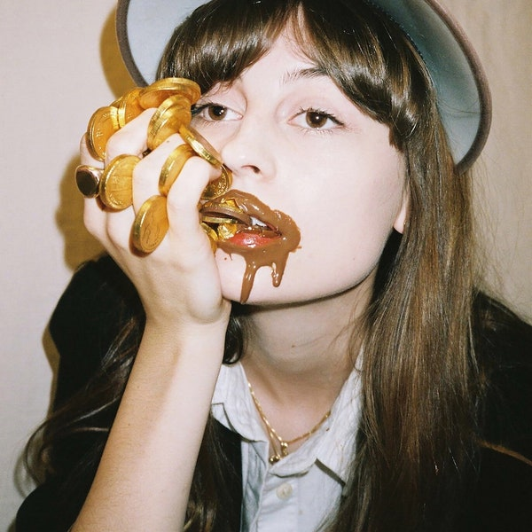

The Highlight Albums:
Atlanta Millionaires Club by Faye Webster
Rating: 8.9/10; Genre: Indie Folk, Folk Pop, Alternative Country
Faye Webster is a unique artist that essentially creates her own genre of music. She possesses a country tune over a folk and indie rock sound. Her lyrics channel moods of longing in a relationship sense but in a modern/relatable matter that allows listeners to swoon and sway to her beat. My favorite songs the album are "Kingston," "Room Temperature," "Right Sice of My Neck," and "Jonny."
Bloom by Beach House
Rating: 10/10; Genre: Dream Pop, Indie Rock, Shoe Gaze
This is my favorite album of all time. Each song of this album beautifully dances with eachother, creating a distinguished album as a whole. Bloom precipitates a build up and release of emotions that allows listener to transcend from their environment to a different realm. The lyrics create a soft lullaby that supports the array of instruments. The crescendo and collapse of the sound creates an oscillation that purges listeners of their coveted inner feelings. The sound surrounds you. My favorite songs off of the albumn are "Myth," "Other People," "The Hours," "Wild," and "Troublemaker."
Let the Sun Talk by Mavi
Rating: 9.0/10; Genre: Hip Hop, Progressive Rap
This album is entirely unique and demonstrates skilled poetic talent. Mavi is a new artist that produces beautifully crafted lyrical flow about themes of social injustice in the United States. He touches on themes of race, gender inequality, and poverty. With this album Mavi not only produces an exquisite sound but he also tells a story of his experience as a Black man facing struggles in America. My favorite songs off of the album are "Self Love," "Daylight Savings," "Love, of Money," and "Guernica."
The Albums Reviewed:

Blonde by Frank Ocean
Rating: 9.2/10; Genre: Hip Hop, Alternative R&B, Neo-Soul
Duster by Duster
Rating: 8.7/10; Genre: Space Rock, Indie Rock, Shoe Gaze
Sling by Clairo
Rating: 7.5/10; Genre: Folk Pop, Indie Pop, Acoustic Folk

Call Me if You Get Lost by Tyler, the Creator
Rating: 8.1/10; Genre: Hip Hop, R&B, Rap

The New Abnormal by The Strokes
Rating: 8.1/10; Genre: Indie Rock, Alternative, Garage Rock